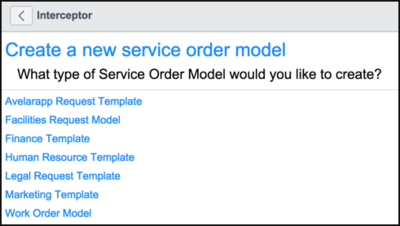

Creating Service Order Templates
| |
Note: This article applies to Fuji. For more current information, see Work Order Templates at http://docs.servicenow.com
The ServiceNow Wiki is no longer being updated. Please refer to http://docs.servicenow.com for the latest product documentation. |
Contents
1 Overview
Service Order templates can be used to create service order requests, which are used in Service Management (SM) applications. You can create the following types of service order requests:
- facilities requests
- finance requests
- human resources cases
- legal requests
- marketing requests
- work orders
- requests in customer-created service management applications
| |
Note: For versions prior to Fuji, see Work Order Models. |
After service order templates have been created, they can be applied to existing service order requests that reuse the same types of information. For example, if you regularly create multiple work orders for the same customer and the same work, you can create a single work order that contains all of the relevant information for the customer and work, create a service order template from that work order, and then apply the template to new work orders as needed so you don't have to repeatedly enter the same information.
You can also publish service order templates so they are accessible via self-service. This feature is set using the application's Configuration screen. If you select Templates will not create a dedicated catalog item, the template screen includes a Publish button, which allows you to manually publish a template as an item in the catalog. If you select Templates will create a dedicated catalog item, the template will be automatically added to the catalog.
If the service order template contains tasks and/or part requirement information, related lists for those types of information are automatically created in the requests created from the template.
Service order templates can be created by users with the following roles:
| Application | Role |
|---|---|
| Facilities Service Management | Users with the Facilities Service Management Administrator role can create facilities request templates. |
| Finance Service Management | Users with the Finance Service Management Administrator role can create legal request templates. |
| Human Resources Service Management | Users with the HR Service Management Administrator role can create human resources case request templates. |
| Legal Service Management | Users with the Legal Service Management Administrator role can create legal request templates. |
| Marketing Service Management | Users with the Marketing Service Management Administrator role can create legal request templates. |
| Work Management | Users with the Work Management Administrator role can create work order templates. |
| |
Note: Users with the Model Manager role can create service order templates from any application. |
2 Creating a Service Order Template from a Product Catalog
- Navigate to Product Catalog > Product Model > Templates > Service Order Templates.
- Click New.
- 
- The service order models listed are based on the Service Management (SM) applications you have activated.
- Click the application for which you want to create a service order template.
- Fill out the fields (see table).
- If you are using a version of Internet Explorer earlier than IE 10, the appearance of the configuration screen resembles pre-Fuji forms.
- As you enter informations for tasks, you can click the min and max buttons to the right of the Name field to collapse and expand task information. If needed, you can also change the order of tasks using drag-and-drop.
- If you are using a version of Internet Explorer earlier than IE 10, the appearance of the configuration screen resembles pre-Fuji forms.
- If you set the Templates will not create a dedicated catalog item option on the application's Configuration screen, the template screen includes a Publish button. You can click this button if you want to manually publish a template as an item in the catalog. If the option is set to Templates will create a dedicated catalog item, the Publish button is not displayed and the template is automatically added to the catalog.
- When you have completed your entries, click Submit.
{kind=link}
{kind=link}
| Field | Description | |
|---|---|---|
| Request information | ||
| Name | [Required] Unique and descriptive name for this template. | |
| Short description | [Required] Content that is copied into the Short description field of a service order request when this service order template is used. The exception to this is a service order request created from an incident, problem, or change request, which always uses the short description of the source task, even when a template is applied. | |
| Description | Detailed description copied into a service order request created from this template. For example, you might provide a description of the computer, monitor, telephone, chair, and other supplies required for employee on-boarding. The system uses this content for the description of the resulting service order request. | |
| Task information | ||
| Name | Enter a name for your first task. As you begin typing the task name, fields for your next task appear.
Note: If you enter information in any of the other fields for a task, the Name field is mandatory. | |
| Description | Enter a description for the task. | |
| Parts and quantities | Enter parts requirements and quantities, as needed. If you selected Part requirements are not needed by agents on the Configuration screen for the associated SM application (for example, the Field Service Configuration screen), the Parts and quantities field id not displayed. | |
| Dispatch group | The group that can select an agent to complete the task. By default, a property is enabled to limit the dispatch groups that you can select to those groups that belong to the location that you selected. If no dispatch groups exist for the location, all dispatch groups are listed for assignment of the tasks. If you selected Request lifecycle is request driven on the Configuration screen for the associated SM application (for example, the Field Service Configuration screen), the Dispatch group field is not displayed. | |
| Assignment group | The group from which an individual agent or vendor should be selected to complete the task. The lookup list shows only the assignment groups associated with the selected Location. If the Assignment Group field is empty, the system searches for the group covering the territory that includes the location of the task. | |
| Skills | Skills required to perform this task. | |
| Duration | Estimated time required to perform this task. If you selected Request lifecycle is request driven on the Configuration screen for the associated SM application (for example, the Field Service Configuration screen), the Duration field is not displayed. | |
3 Converting a Service Order Request into a Template
The process for creating a service order template from an existing service order request is simple. Simply create a service order request and create a template from it. The fields in the service order request are populated by information in fields in the template.
To create a service order template from an existing service order request:
- Navigate to the Create New option of any Service Management (SM) application (for example, Work Management > Work Order > Create New.
- Create the request.
- Right-click in the record header and select Create Service Order Template.
- The template is created for the appropriate application. That is, for work management, a work order template is created, and for facilities service management, a facilities request template is created. The information in the fields come from the order or request, except where noted (see the table under Creating a Service Order Template from a Product Catalog).
4 Using a Service Order Template
Service order templates enable users with the proper roles to create service order requests and tasks automatically.
- Navigate to the SM application for which you want to create a new service order request (for example: Work Management > Work Order > Create New).
- In the order form, select the appropriate template from the Template field.
- Save the form.